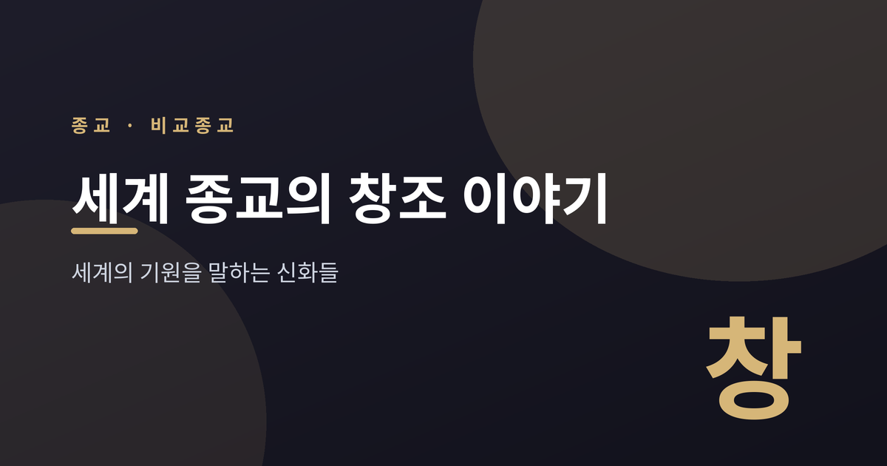
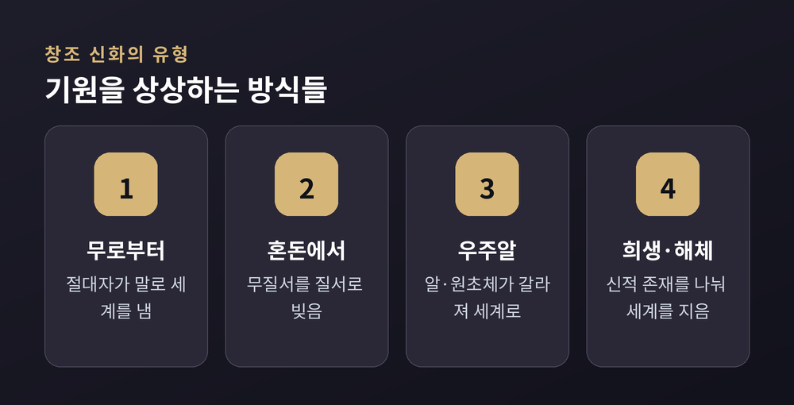
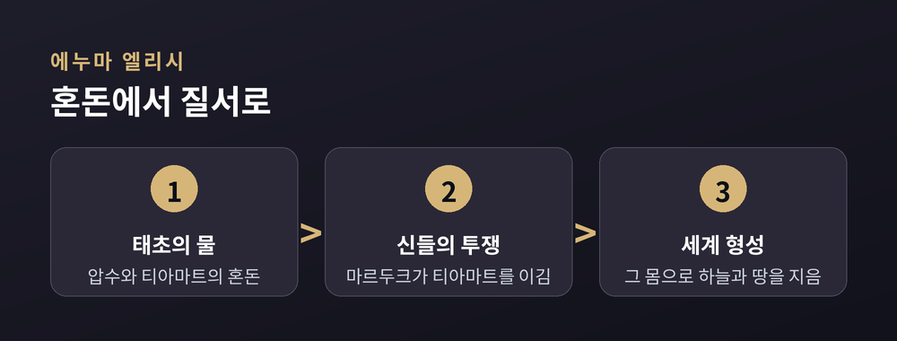

이번 글에서는 세계 여러 종교의 창조 이야기를 나란히 놓고 살펴보려 합니다. 세계는 어떻게 시작되었는가. 이 물음에 인류는 저마다 다른 신화로 답해 왔습니다. 특정 신앙의 옳고 그름을 따지려는 글이 아닙니다. 비교종교의 눈으로, 서로 다른 기원 이야기가 무엇을 닮았고 무엇이 다른지 담담히 짚어 보겠습니다.

창조신화는 세계와 인간이 처음 어떻게 생겨났는지를 설명하는 이야기입니다. 거의 모든 문화가 자기 나름의 기원 이야기를 지니고 있습니다.
이 이야기들은 대개 일상 경험 너머의 순간을 다룹니다. 빛과 어둠이 아직 갈리지 않은 때. 하늘과 땅이 붙어 있던 때. 말로 그리기 어려운 시작을 신화는 상징으로 붙잡습니다.
종교학은 이런 이야기를 사실 보고서로 읽지 않습니다. 세계의 질서와 인간의 자리를 이야기로 설명하려는 시도로 봅니다. 그래서 "어느 신화가 참인가"보다 "각 신화가 세계를 어떻게 상상했는가"를 묻습니다.
학자들은 세계의 창조신화를 몇 가지 유형으로 나눕니다. 되풀이되는 구조가 뜻밖에 뚜렷하기 때문입니다.
크게 보면 이렇습니다. 아무것도 없는 데서 생겨나는 무(無)로부터의 창조. 이미 있던 혼돈을 질서로 빚는 혼돈에서의 창조. 원초의 알이 갈라지는 우주알형. 신적 존재의 몸을 나눠 세계를 짓는 희생·해체형. 이 밖에도 원초의 바다에 잠수해 흙을 건져 올리는 유형, 아래 세계에서 위로 올라오는 출현형이 있습니다.
한 가지 짚어 둘 점이 있습니다. 흔히 떠올리는 "완전한 무로부터의 창조"는 세계 신화에서 오히려 드뭅니다. 많은 전통이 태초의 물이나 어둠, 곧 어떤 혼돈에서 이야기를 시작합니다.

창세기 1장 "태초에 하나님이 천지를 창조하시니라"는 오랫동안 무로부터의 창조로 읽혀 왔습니다. "하늘과 땅"은 대립쌍으로 세계 전체를 가리키는 히브리식 표현입니다.
다만 이 대목에는 학계의 이견이 있습니다. 같은 구절을 "하나님이 천지를 창조하기 시작하셨을 때"라는 시간절로도 옮길 수 있습니다. 그렇게 읽으면 바로 다음 절에서 땅은 이미 "혼돈하고 공허하며" 어두운 물 한가운데 있는 것으로 그려집니다. 이 독법에서는 무로부터가 아닙니다. 실제로 '무로부터의 창조'라는 개념 자체는 후대의 헬레니즘 시대 유대교에서 뚜렷해졌다고 봅니다.
두 입장이 갈리는 셈입니다. 여기서는 어느 한쪽을 단정하지 않겠습니다.
이슬람의 쿠란은 알라가 하늘과 땅을 엿새 동안 지었다고 말합니다. 이 '엿새'를 문자 그대로의 날로 볼지, 여섯 시대로 볼지도 해석이 나뉩니다. 무엇보다 쿠란에는 "있으라 하시니 있었다"는 유명한 구절이 있습니다. 말 한마디로 존재가 생겨난다는 이 표현은, 뒤에서 다시 만나게 됩니다.
메소포타미아의 창조 서사시 에누마 엘리시는 전혀 다른 그림을 보여 줍니다.
태초에는 단물의 신 압수와 짠물의 여신 티아마트, 곧 물의 혼돈만 있었습니다. 그 물에서 신들이 태어납니다. 젊은 신들의 소란에 다툼이 일고, 마침내 젊은 신 마르두크가 원초의 여신 티아마트와 맞섭니다.
마르두크는 티아마트를 이깁니다. 그리고 그 몸을 둘로 갈라 한쪽으로 하늘을, 다른 쪽으로 땅을 만듭니다. 여기서 창조는 무에서 솟아난 것이 아닙니다. 이미 있던 혼돈을 정복하고 질서로 빚어낸 결과입니다.
이집트도 결이 비슷합니다. 세계 이전에는 눈이라 불리는 무한한 어둠의 물만 있었고, 거기서 원초의 언덕이 솟습니다. 그리스의 시인 헤시오도스도 "맨 처음 카오스가 생겨났다"고 노래합니다. 다만 이 카오스는 오늘날의 '혼란'과 다릅니다. 모든 형태에 앞선, 텅 빈 원초의 틈에 가깝습니다.

말과 정복은 서로 다른 상상입니다. 한쪽은 이전에 아무것도 없었다고 말하고, 다른 한쪽은 원초의 재료를 질서로 빚었다고 말합니다.
힌두교에는 단 하나의 창조 이야기가 없습니다. 베다와 푸라나 등 여러 문헌에 서로 다른 창조관이 나란히 담겨 있습니다.
그중 하나가 '황금 알'로 불리는 히란야가르바입니다. 분화 이전의 모든 잠재성을 품은 알이며, 세계는 외부의 창조자가 아니라 이 알 안에서 나옵니다. 알이 갈라지며 창조신 브라흐마가 등장합니다.
흥미로운 대목도 있습니다. 리그베다의 어떤 찬가는 "태초에 무엇이 있었는지 신들도 알지 못한다"고 노래합니다. 세계가 언제 처음 생겼는지 누구도 확언하지 못한다는 것입니다. 의심을 정당한 태도로 남겨 둔 셈입니다. 창조를 단정하지 않는 이런 겸손은 다른 전통에서는 쉽게 보기 어렵습니다.
중국의 반고 신화도 알에서 시작합니다. 태초의 우주알 속에 거인 반고가 잠들어 있습니다. 오랜 세월 뒤 알이 갈라지고, 맑은 기운은 올라가 하늘이, 탁한 기운은 내려가 땅이 됩니다. 우주알이 갈라지며 하늘과 땅이 나뉘는 상상은, 문화를 건너 되풀이됩니다.
원초의 존재를 해체해 세계를 짓는 이야기도 여럿입니다.
리그베다의 푸루샤 찬가에서, 원초의 존재 푸루샤는 희생되어 나뉩니다. 그 몸에서 세계와 사람의 구분이 생깁니다. 반고 역시 죽은 뒤 그 몸이 세계로 변합니다. 숨은 바람이 되고, 두 눈은 해와 달이 되며, 피는 강이 됩니다.
북유럽 신화의 거인 이미르도 마찬가지입니다. 불과 얼음이 만나 생겨난 이 원초의 거인을 신들이 죽이고, 그 몸으로 세계를 짓습니다. 피로 바다를, 살로 땅을, 뼈로 산을, 두개골로 하늘을 만듭니다. 서로 멀리 떨어진 문화가 "원초의 몸을 나눠 세계를 지었다"는 같은 뼈대를 공유합니다.
이렇게 늘어놓고 보면 공통의 무늬가 드러납니다.
먼저 태초의 물과 어둠입니다. 메소포타미아의 티아마트, 이집트의 눈, 창세기의 깊은 물까지, 시작에는 자주 원초의 바다가 놓입니다. 다음은 분리입니다. 붙어 있던 하늘과 땅을 가르는 사건이 거듭 나타납니다. 그리고 말과 질서입니다. 혼돈에 이름과 경계를 주어 세계를 정돈합니다. 이집트 프타의 발화, 창세기의 "빛이 있으라", 쿠란의 "있으라"가 한 줄에 놓입니다.
이런 닮음을 어떻게 볼 것인가. 문화 사이의 전파도 일부 있었습니다. 그러나 더 근본적인 설명이 있습니다. 인간의 정신이 궁극의 물음 앞에서 제한된 은유로 답하기 때문이라는 것입니다. 물, 알, 분리, 몸. 손에 잡히는 이미지로 손에 잡히지 않는 시작을 그려 본 셈입니다.
정리하면 이렇습니다. 세계의 창조 이야기는 서로 다른 대답이면서, 결국 같은 물음을 향합니다. 나는 어디에서 왔고, 이 세계는 어떤 질서 위에 서 있는가.
정답을 가리는 일은 이 글의 몫이 아닙니다. 다만 낯선 신화를 나란히 놓고 보면, 인류가 오래도록 같은 어둠 앞에 서 있었다는 사실이 보입니다.
서로 다른 이야기를 편견 없이 읽어 보시길 권합니다. 그 안에서 우리는 결국 같은 질문을 만나게 될지도 모릅니다.